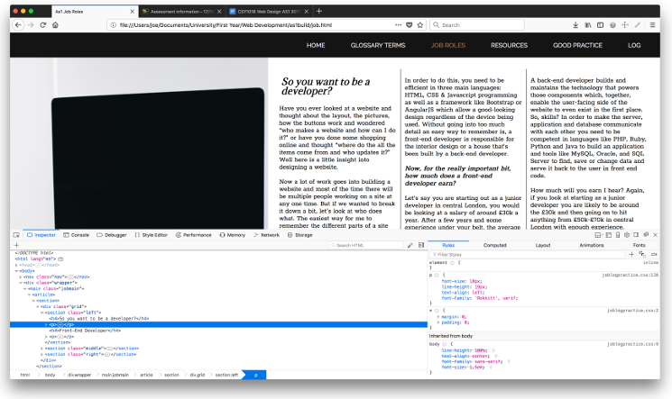
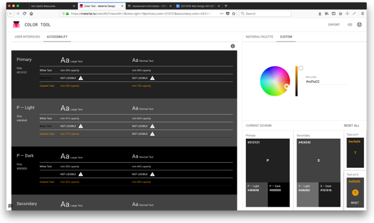
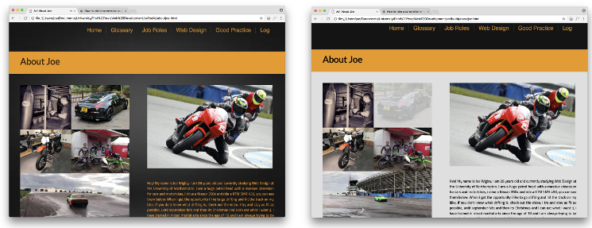
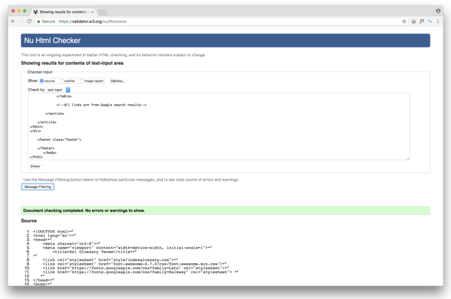
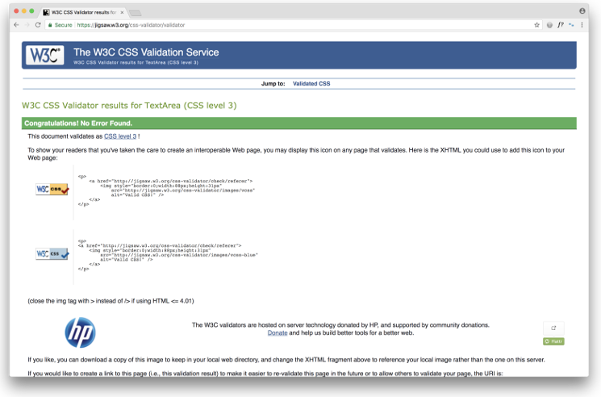

In October 2017, I made the decision to go back to school as a mature student to study web design.
I didn’t have any prior experience with web language and web applications, all of my computer experience
was from being at work and school and learning how to use Microsoft Office.
A lot of schools now teach code from the age of 11, but unfortunately, I did not have that luxury. In the three months that I have been
studying part time, I have learned way more than I ever expected too. I have come from not knowing what
CSS & HTML are, to becoming adequate and confident in starting to create a website.
It hasn’t been an easy three months though, I have had to put a lot of extra hours into my learning outside
of University and a lot of hours into the website I am putting together for my assignment. One thing I have
definitely come to terms with, it is not straight forward! Coding to me is like learning a completely different
language, and not just one language. I have only scratched the surface with HTML & CSS and my brain has been
hurting since the day I started.
It isn’t just the code you need to learn, it’s everything else that goes with it. You might be able to pick up coding
quickly but you still need to understand how developer tools work, how you can validate your code, how you can validate your colour codes
to make sure that the text color you choose is readable against the background you have chosen, where to
look for the most up to date designs and waht you should be looking for, there is a lot to take in. But with that, it is very rewarding, I have spent hours
and hours trying to get something to work on my site, and a lot of the time it is in the last couple hours of the day where
everything comes together, that piece of the site you have been trying to put together for days and suddenly it clicks and
you get it, seeing the work pay off, to me, that’s what I find rewarding. If you want to see what I mean about the tools you need to get familiar with,
check out the examples below:
Web Developer Tools

Colour Validation Tools

Before & After Colour Validation

HTML Code Validation

CSS Code Validation

I am sure that everyone has their own way of working, I was so eager to get started and put what I have learnt into motion that I ended up re-doing half my website at least 4 times. One of the stages you can see below, this ended up in me losing a huge amount of time but to me it was not time wasted because all of those hours, rewriting code and researching better ways to do things, it got me understanding what I was doing more and more. From experience, I have learnt that reading how to do something isn’t the same as doing it. Everything new can feel scary and daunting but if you don’t give it a try you’re not going to get anywhere. If you want to get good at something, don’t read it in a book or watch it on a video, do it!
So, what have I taken from the last 3 months?
- There are never enough hours in the day!
- Don’t work out of your head.
- Research and look at what’s trending, what looks good on other sites?
- Practice what you are trying to learn, don’t just stick to books and videos.
- Speak to other people, see what they think and what they would change.
- Sometimes you need to take a break for a few hours and come back to it later.
- Debugging code sucks, but get used to it!
- Get yourself a rubber duck and get used to talking to it.
- It may be hard to get your head round but, it’s an awesome thing to learn!